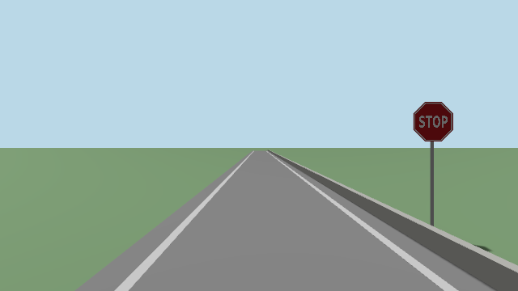
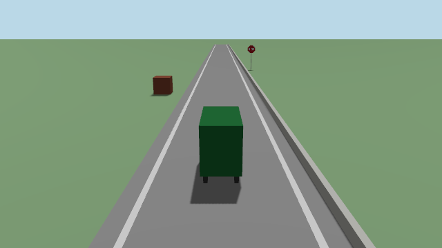

Ben, 7 Nov: replace Gazebo with our own Rust simulator, every sensor. This page is the
cameras part: ros/sim/aav_sim_cameras. The rest of the simulator (world, car, lidar,
IMU, GPS, wheels, clock) is built beside it. The plan:
our own simulator.

In one line
Bevy draws the world from each camera on the car, with no window, and the pictures go out on Gazebo's camera topics: same size, lens, rate, encoding and frame.
The cameras
| Camera | Topics | Frame | Where it sits |
|---|---|---|---|
| front left | /sensors/camera/front_left/image_raw, camera_info |
camera_left_link |
vehicle.yaml |
| front right | /sensors/camera/front_right/... |
camera_right_link |
vehicle.yaml |
| rear | /sensors/camera/rear/... |
camera_rear_link |
vehicle.yaml |
| chase | /vehicle/sim/chase_camera/image_raw |
base_link |
7 m behind, 3.5 m up |
| Setting | Value | Same as Gazebo? |
|---|---|---|
| Picture | 640 x 360, rgb8 |
yes |
| Lens | focal 343 px, centre (320, 180), no distortion | yes: K, P, R, D all match |
| Rate | 10 Hz, on whole tenths of sim time | yes |
| QoS | reliable, keep last 10 | yes |
| Stamp | the time of the car pose it was drawn from | yes |

Run it
| Command | Does |
|---|---|
pixi run sim-cameras |
the test world for 10 s, then the timing table. No ROS |
pixi run sim-cameras --save /tmp/pics |
also keeps each camera's first picture |
pixi run sim-cameras --from 18 --speed 0 |
the car parked 7 m from the stop sign |
pixi run sim-cameras --bench 300 |
as fast as it can: the most pictures a second |
pixi run sim-cameras --ros |
publishes the topics, a scripted drive, wall-clock stamps |
pixi run sim-cameras --ros --pose truth |
draws where /vehicle/sim/truth says, with its stamps |
--ros needs pixi run build first, and stays on this computer (tools/ros.sh --local).
How the core plugs it in
core simulator ─── /vehicle/sim/truth (50 Hz) ───► sim_cameras ───► the camera topics
or, in Rust: Cameras::tick(car pose, sim time)Two ways, both ready:
| Way | When |
|---|---|
Its own program, reading /vehicle/sim/truth |
the default: a slow picture can't delay the IMU |
In Rust, camera_core::Cameras with sim_cameras::BevyRenderer |
if the core wants pictures in its own loop |
The shared types live in camera-core, which has no Bevy and no ROS:
| Type | What it is |
|---|---|
SimWorld |
the sky, the light, and a list of Shapes in the map frame; the car's body |
Shape |
a name, a Geometry (plane, box, cylinder, octagon), a pose, a Look (colour, picture) |
Rig, CameraSpec |
each camera: lens, rate, topic, frame, mount |
CameraRenderer |
the trait: set_world(&SimWorld) and render(car, stamp, cameras) |
Cameras |
the rig, a timer per camera, and a renderer: tick(car, now) draws the ones due |
For the merge: the core turns its world into a SimWorld (SDF's boxes, planes and
cylinders map one to one; colours are SDF's, linear) and publishes /vehicle/sim/truth.
Its /system/source announcer lists the cameras, as gazebo_adapter does.
Tests
| Test | What it proves | Where |
|---|---|---|
| projection | a point 10 m ahead lands on (320, 180); 1 m left and 0.5 m up, 34.3 and 17.15 px off | camera-core, every tools/test.sh |
| camera_info | K, P, R, D as Gazebo's bridge sends them | camera-core |
| rate | one sim minute at 50 Hz gives each camera exactly 600 pictures, on the tenths | camera-core |
| picture colours | sky, road, grass, kerb, box, stop sign, post: each where the lens says, its colour | tests/render.rs, needs a GPU |
| picture edges | the stop sign's edges in the picture within 1 px of the lens's | tests/render.rs |
Measured (7 Nov, Ben's M4 Max)
Other agents were using the same computer (load 10 to 40), so the slow tail is partly theirs.
| Run | Result |
|---|---|
| Bevy ready, shaders warmed | 0.2 to 0.5 s |
Four cameras at 10 Hz, --ros, 25 s |
10.03 Hz each, 251 pictures, out 16 ms after due (median), 60 ms worst, none late |
--pose truth, a 50 Hz truth on sim time |
10.00 Hz on sim time, every stamp on a tenth, 15 ms median, 26 ms worst |
ros2 topic hz |
10.000 Hz, min 0.097 s, max 0.103 s |
--bench, four cameras, a quiet minute |
57 rounds a second (227 pictures/s), 17.5 ms a round |
| No ROS, 30 s, heavy load | 9.92 Hz; median 19 ms; 25 of 298 late (worst 196 ms) |
So four cameras at the car's 15 Hz (60 pictures a second) should fit when the computer is quiet: not yet run at 15 Hz.
What it is not, yet
| Missing | Why it matters |
|---|---|
Gazebo's worlds (road.sdf, test_lot.sdf, campus) |
only the test world draws; the core's world reader feeds it at the merge |
| A computer with no GPU (CI, oirp-spss) | Bevy needs Vulkan or Metal: the picture tests can't run there. Only camera-core runs in CI |
| A side-by-side with Gazebo's pictures | the looks match by eye (docs/img/sim-cameras.png); not measured |
| The detector on these pictures | the stop sign carries Gazebo's own picture; not yet run through RF-DETR |
| Faults (freeze, stop) | gazebo_camera does them for Gazebo; the simulator's fault switch should cover these |
| The JPEG topics | Gazebo has none either: chase_jpeg and preview_jpeg still make them |
| Lifelike pictures | a non-goal: Gazebo's aren't either |